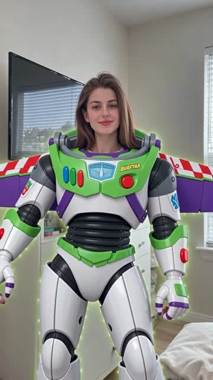

收集内容趋势
关注海外社媒中可参与、可复用的视觉玩法，整理创意方向与表现特点。
AI TEMPLATE / CONTENT GROWTH
在海外增长运营实践中，调研 TikTok 与 Instagram 的内容趋势，参与 AI 模板思路、生成结果与英文 SEO 内容制作，连接热点判断和内容生产。

WORKFLOW
关注海外社媒中可参与、可复用的视觉玩法，整理创意方向与表现特点。
把风格、场景与动态要求转化为提示词和镜头描述，记录制作过程。
产出模板示例，整理问题与经验，为后续内容制作积累参考。
TEMPLATE EXAMPLES
三个现有生成结果示例：风格转化、人物互动与角色变身。
WORK RECORDS
含提示词的制作记录
英文 SEO 内容中心月曝光
29 条为制作表中含提示词的记录；8,500+ 沿用简历中的实习期 SEO 月曝光记录，非当前实时数据。
REFLECTION
模板作品需要同时考虑视觉吸引力与输入条件。已有制作表涵盖创意收集、创意完善和经验总结，帮助把一次生成结果转化为后续可参考的制作记录。
后续关注不同输入照片下的适用条件、失败情况与修正方法，让模板的复用能力有更完整的测试记录。